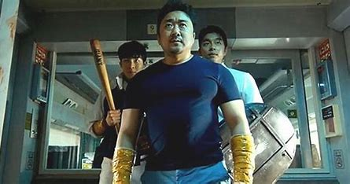
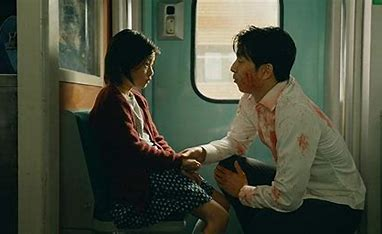
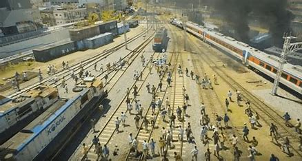
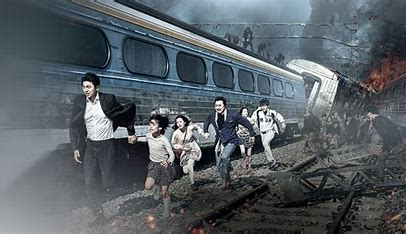

Train to Busan
Train to Busan is a South Korean action-horror film that takes place on a train to Busan during a zombie apocalypse. It is a thrilling and emotional ride that explores themes of survival, sacrifice, and humanity. The lead character in Train to Busan is Seok-woo, a regular hedge fund manager living in Seoul. The main character Seok Woo played by Gong Yoo is a father who's mostly focused on his work and providing for his daughter’s future, but he doesn't realize that what she truly wants is his attention and affection.
Cast
Take a look at featured scenes captured from the film



